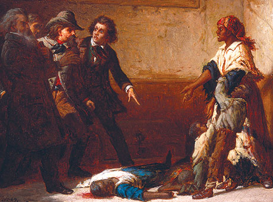

Margaret Garner's Echoes in BelovedToni Morrison's 1987 novel Beloved is a haunting story that explores the psychological traumas of enslaved people, set in the aftermath of the Civil War. The novel follows the protagonist Sethe, an enslaved woman who escapes to Ohio in 1856. When her former owner comes to recapture her and her family, Sethe kills her youngest daughter to save her from slavery - a controversial act of sacrifice. Morrison based Sethe's story on the life of Margaret Garner, who, similarly to Sethe, was a fugitive slave who committed infanticide. Both went to jail for the infanticide, but their stories diverge from there. Scroll down below to explore their stories! |

Painting by Thomas Satterwhite Noble in 1867 |
Margaret Garner |
Sethe |
|---|
|
Margaret Garner was born into slavery in Kentucky. |
1834
|
|
|
1835
|
Sethe was born into slavery in Kentucky at the Sweet Home Plantation, a plantation owned by "benevolent" master Mr. Garner. |
|
|
Garner escapes from her plantation in Kentucky across the Ohio River through the Underground Railroad with her husband and four children. She hoped to arrive in Cincinnati. |
1856
|
After her three children already made a successful escape to Cincinnati, Sethe herself escaped from the Sweet Home plantation after the benevolent Mr. Garner was replaced by a harsher master. Sethe, pregnant at the time, gave birth to her daughter Denver along the way with help from a white girl named Amy. |
|
The day Garner settles down in a house next to Mill Creek in Kentucky following her escape, her former owner, aided by marshals, locate her and her family. |
28 days after arriving at 124, the house of her three children and her mother-in-law, Schoolteacher and several officers come to 124 to recapture Sethe and her children. |
|
|
Garner grabs a butcher knife and slashes the throat of her two-year-old daughter to spare her from being recaptured into slavery. Before she can kill the rest of her children, Garner is overpowered and imprisoned. |
Sethe uses a handsaw to kill her older daughter, named Beloved. She intends on killing her other three children, but is similarly overpowered and sent to jail. |
|
|
At Garner's trial, Garner is indicted for charges of property damage. Her punishment: being sent back to slavery. After a tumultuous voyage to an Arkansas by boat, her child drowns. Garner tries to drown herself as well, but fails to do so. |
Sethe is jailed, but is released after two years. |
|
|
Garner dies of typhoid after two years of slavery. |
1858
|
Sethe returns to 124, isolated from her community which shuns her for her infanticide. Sethe and her daughter Denver are haunted by the ghost of Beloved. |
|
1863
|
Sethe's two sons are unable to handle the trauma of the infanticide and flee 124, never to be seen again. |
|
|
1873
|
Paul D, one of Sethe's old friends from Sweet Home, arrives at 124 and provides a temporary stability to the family. Paul D drives out the ghost of Beloved. |
|
|
A mysterious young abandoned woman named Beloved appears at 124. Sethe and Denver become convinced that Beloved is the reincarnation of her dead daughter, swallowing the two women back into their traumatic past. |
||
|
Paul D learns about Sethe's infanticide and leaves 124. Meanwhile, Sethe is emotionally consumed by Beloved and becomes obsessed over earning her forgiveness for the infanticide. |
||
|
Denver breaks years of isolation to reach out to the townsfolk for help with her deteriorating mother. The local women in Cincinnati exorcise Beloved through a prayer. Beloved is never to be seen again, deliberately forgotten by the town. Paul D returns to 124 and the future of Sethe and Denver appears hopeful, even after years of trauma. |
As you can see, up until their acts of infanticide, Margaret Garner and Sethe are nearly identical. However, Morrison chose to stray away from Garner's story. Instead of ending Sethe's life in enslavement, Morrison depicted Sethe as a freed woman who was plagued by trauma. By making this decision, Morrison avoided writing the traditional slave story - one that focuses on the slavery itself and treats the enslaved people as a backdrop - and instead focused on people's "internal lives", a choice that earned Beloved praise from literary critics and everyday readers alike.